Linear Fresnel Reflector Arrays Around the World
By Charles Xie
The following video shows some linear Fresnel reflector arrays that have been constructed around the world:
In the following, let's choose one of them for in-depth analysis.
The Sundt linear Fresnel reflector array
Tucson Electric Power (TEP) and AREVA Solar constructed a 5 MW linear Fresnel reflector solar steam generator at TEP’s H. Wilson Sundt Generating Station — not far from the famous Pima Air and Space Museum. The land-efficient, cost-effective technology uses rows of flat mirrors to reflect sunlight onto a linear absorber tube (Figure 1), in which water flows through, mounted above the mirror field. The concentrated sunlight boils the water in the tube, generating high-pressure, superheated steam for the Sundt Generating Station.
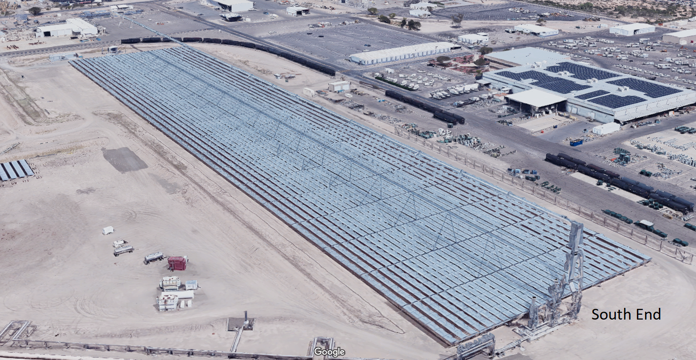
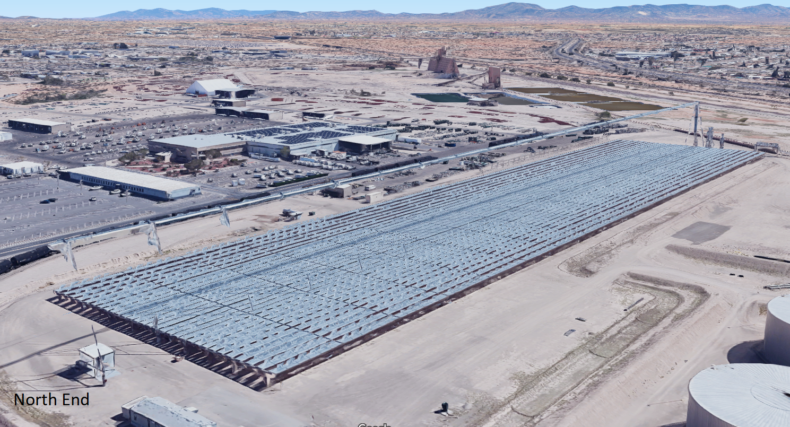
Figure 1. Viewing the Sundt linear Fresnel reflectors in Google Maps 3D from two different angles.
The Sundt array is relatively small, so we chose it as an example to demonstrate how Aladdin can be used to design, simulate, and analyze this type of solar power plant. This article demonstrates how various analytic tools built in Aladdin can be used to understand the design principle and evaluate a design choice. Figure 2 shows a 3D model created using Aladdin, with a light beam visualization for illustrating how sunlight is reflected by the mirrors and focused on the absorber.
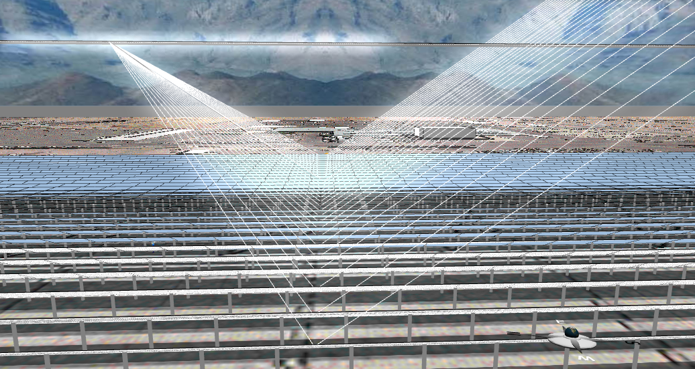 | 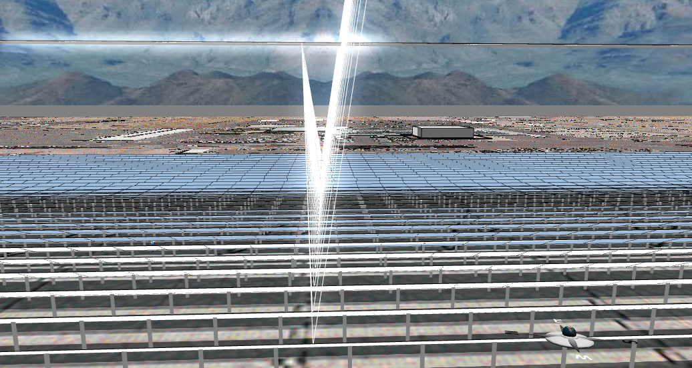 |
Figure 2. Visualization of incident and reflecting light beams in two different seasons: January (left) and July (right).
One of the “strange” things that we noticed from the Google Maps of the power station (Figure 2) is that the absorber tube stretches out a bit at the northern edge of the reflector assemblies, whereas it doesn’t at the southern edge. The reason that the absorber tube was designed in such a way is immediately illuminated through the light beam visualization in Aladdin (Figure 3). As the solar rays shine from the south in the northern hemisphere, the focal point on the absorber tube shifts towards the north. During most days of the year, the shift decreases when the sun rises from the east to the zenith position at noon and increases when the sun lowers as it sets to the west. This shift would have resulted in what we can call the edge losses if the absorber tube had not extended to the north to allow for the capture of some of the light energy bounced off the reflectors near the northern edge. This biased shift becomes less necessary for sites closer to the equator. Aladdin has a way to “run the Sun” for the selected day, creating a nice animation that shows exactly how the reflectors rotate to redirect the solar rays to the absorber pipe above them.
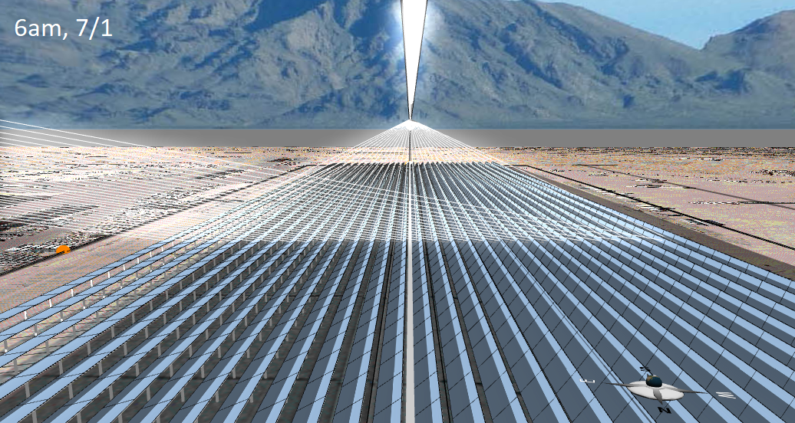
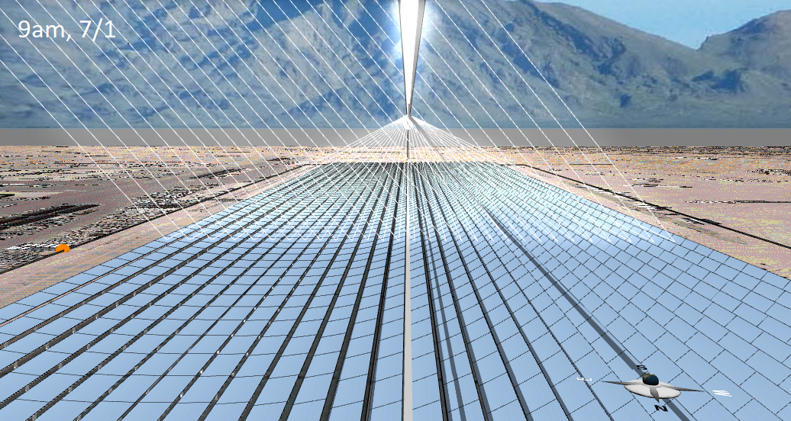
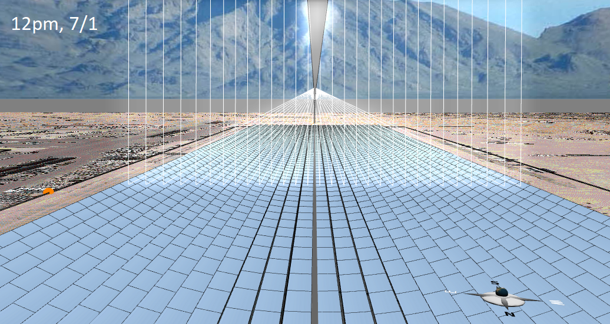
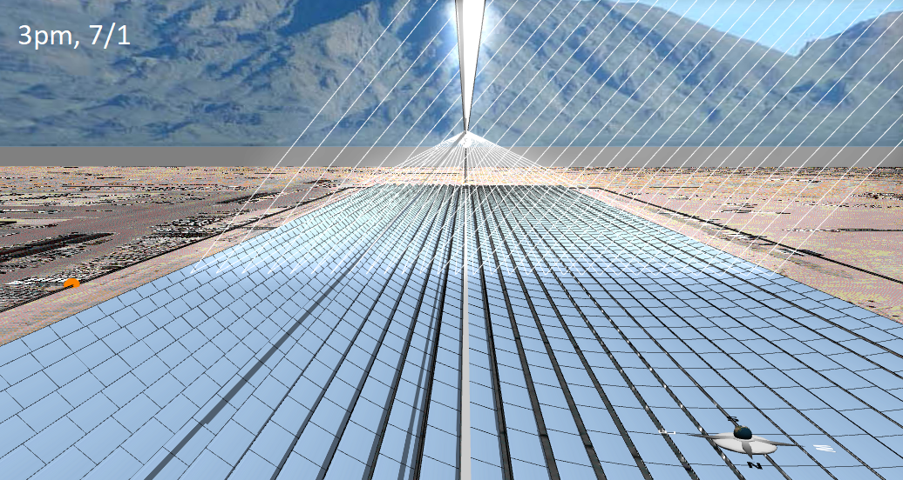
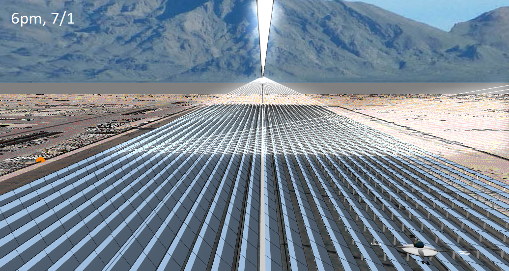
Figure 3. Snapshots of the orientations of the reflectors at different times of a day (July 1st).
Figure 3 shows five snapshots of the reflector array at 6am, 9am, 12pm, 3pm, and 6pm, respectively, on July 1st. As we run the radiation simulation, the shadowing and blocking losses of the reflectors can be vividly visualized with the heat map (Figure 4). Unlike the heat maps for photovoltaic solar panels that show all the solar energy that hits them, the heat maps for reflectors show only the reflected portion (you can choose to show all the incident energy as well, but that is not the default).
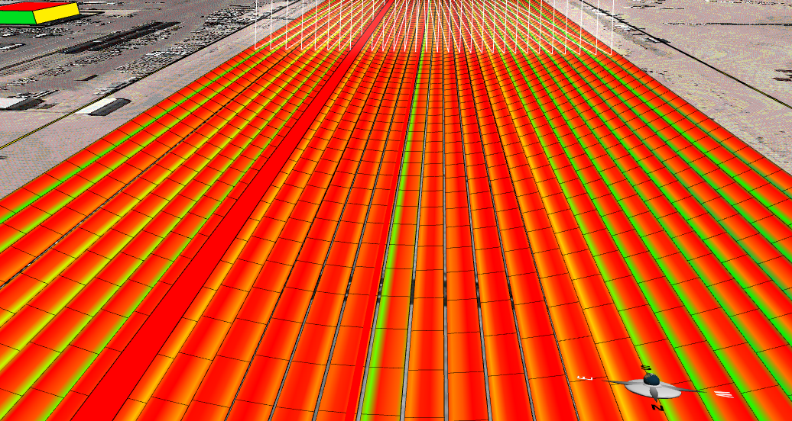
Figure 4. A heat map visualization of reflected energy.
There are several design parameters you can explore with Aladdin, such as the inter-row spacing between adjacent rows of reflectors. One of the key design questions is: At what height should the absorber tube be mounted? A taller absorber is obviously more favorable as it reduces shadowing and blocking losses. However, the problem is that, the taller the absorber is, the more it costs to build and maintain. So let’s run simulations to study the effect of this design variable. Figure 5 shows the relationship between the daily output and the absorber height. As you can see, at six meters tall, the performance of the array is severely limited. As the absorber is elevated, the output increases but the relative gain decreases. Based on the results, we would probably choose a value around 24 meters if we were the designer.
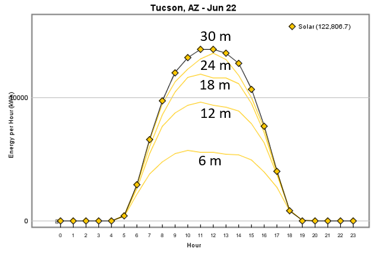
Figure 5. The daily output vs. the absorber height.
An interesting pattern to notice from Figure 5 is a plateau (even a slight dip) around noon in the case of 6, 12, and 18 meters, as opposed to the cases of 24 and 30 meters in which the output clearly peaks at noon. The disappearance of the plateau or dip in the middle of the output curve indicates that the output of the array is probably approaching the limit. If the height of the absorber is constrained, another way to boost the output is to increase the inter-row distance gradually as the row moves away from the absorber position. But this would require more land. Engineers are always confronted with this kind of trade-offs. Exactly which solution is the optimal depends on comprehensive analysis of the specific case.